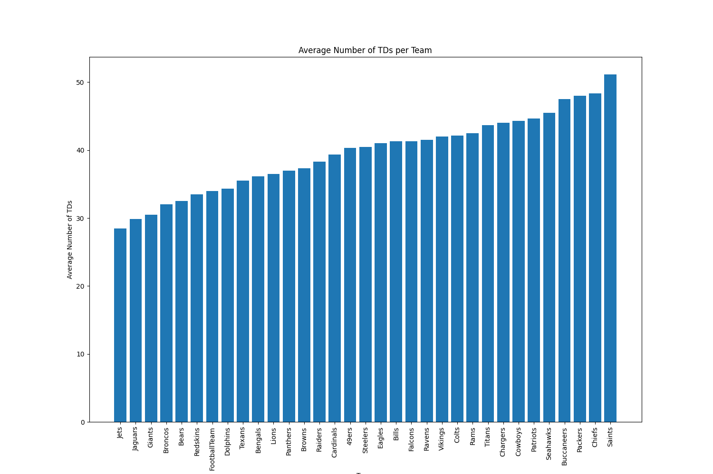
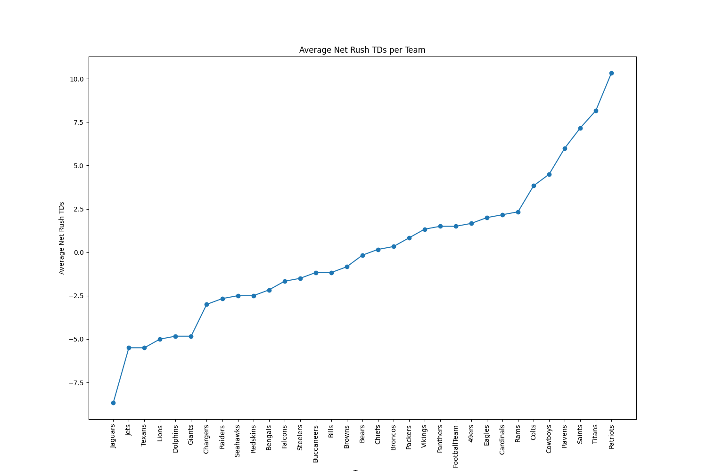
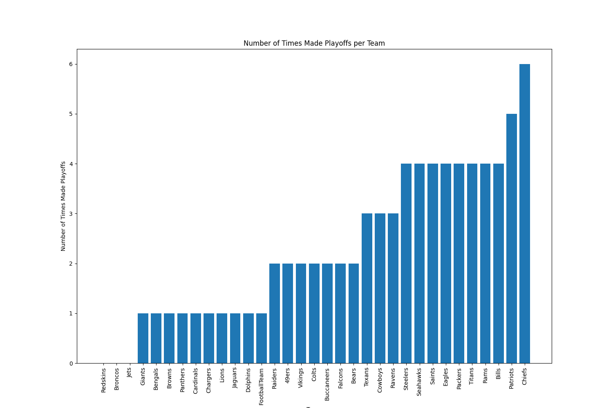
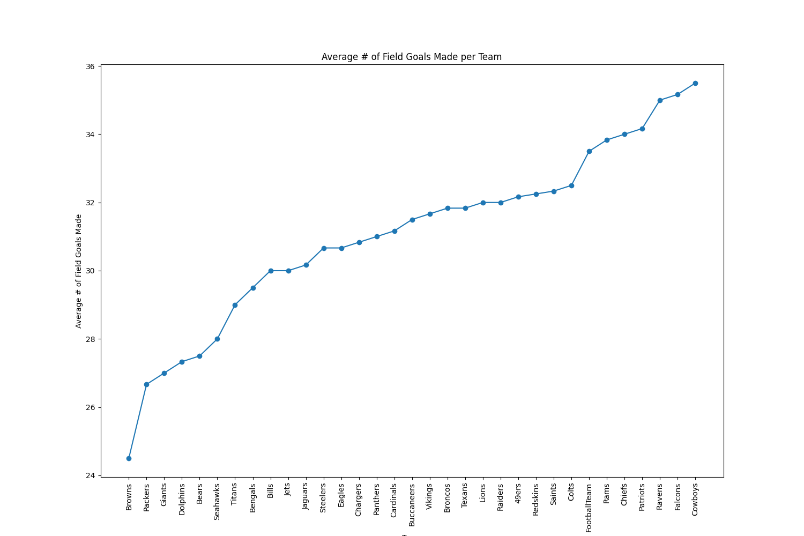
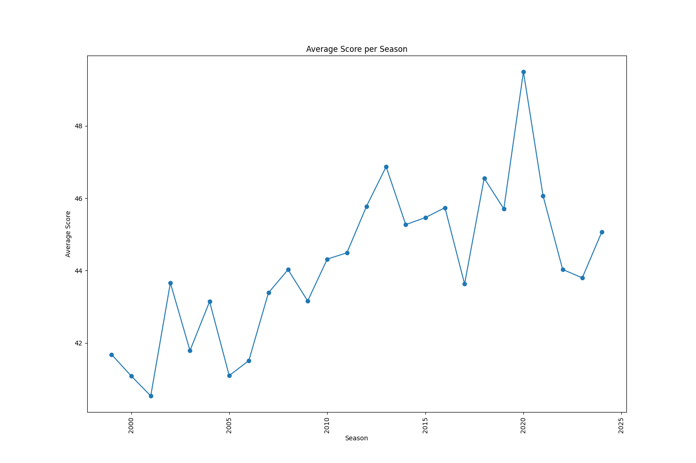
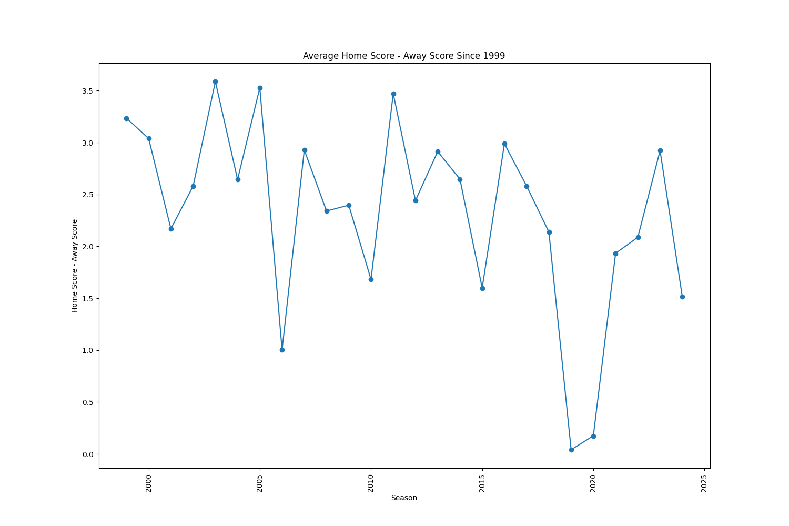
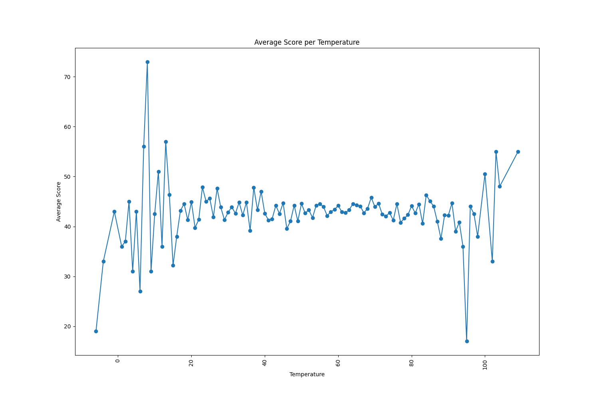
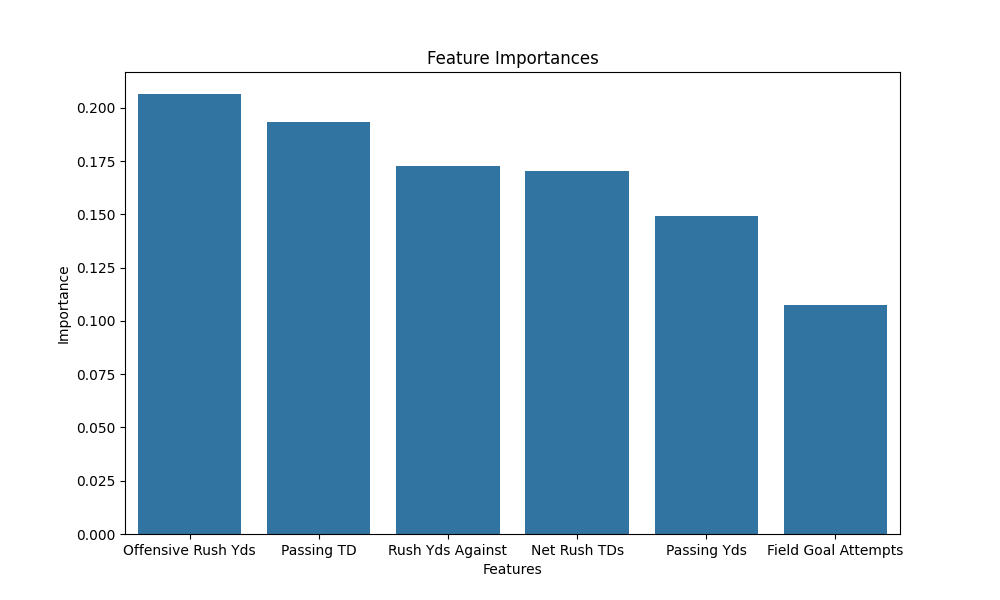

Fall 2024 Data Science Project
Author: Jackson Lang
Contributions: Everything done by me (Jackson)!
This project will explore the nature of the data science pipeline covering data from the National Football League(NFL). The NFL is a premier sports league in the United States, with 32 teams playing 17 games a season, and more in the playoffs. For years, data on each game played, score, and every play have been logged in order to break down games into their statistical essence. This provides a great opportunity to understand data science concepts by exploring datasets covering NFL games and examine the data with a linear regression and binary classifier ML algorithms under the Primary Analysis section.
This analysis will cover the five stages of the data lifecycle in order to analyze the data available about NFL games played. As seasons pass, the NFL has evolved its season length and rulebook. Looking at data gathered over several years can provide insight into how the game has changed, and we can find statistically significant outliers and trends in that time.
I will cover the stages of the Data Lifecycle in these steps:
This section focuses on data collection, curation, and transformations to prepare our data for analysis. I searched for NFL datasets that contained interesting data and hopefully with several years of observations.
I found a dataset that provided box scores across a few decades worth of games. This dataset is available for download or import from github with credit to its owner nflverse. I also found data across several years of team statistics, at edsonjaramillo/nfl-stats. There are several categories to be found in this dataset that provides insight into a teams stats over a seven year span. I chose to analyze teams’ offensive passing, rushing, scoring, defensive rushing, and special teams field goals statistics. All of these can provide a rough estimation of a team in a given year, and we will learn what differentiates playoff and non playoff teams.
In order to accomplish this, I will be using Python, through Google Colab, similar to Jupyter Notebook. To begin, lets import useful libraries. Like Pandas, which will allow us to store, view, and manipulate data. Matplotlib and seaborn provides tools to plot, graph, and otherwise display data and output from our ML model. Other imports benefit us to create a ML model later on.
import os
import pandas as pd
import numpy as np
import matplotlib.pyplot as plt
import seaborn as sns
import scipy.stats as stats
from sklearn.model_selection import train_test_split
from sklearn.ensemble import RandomForestClassifier
from sklearn.metrics import classification_report, confusion_matrix
from sklearn.preprocessing import StandardScaler
Lets look at the team stats data from 2016-2021. I need to combine data from a lot of different files over each season. We can look at the data after we merge it together.
# Prepare the data that compares team stats over different seasons
# 2016
df_def2016 = pd.read_csv('/content/drive/MyDrive/320FinalProjCsvFiles/2016_team_stats/2016_team_defense-rushing.csv')
df_offrush2016 = pd.read_csv('/content/drive/MyDrive/320FinalProjCsvFiles/2016_team_stats/2016_team_offense-rushing.csv')
df_offpass2016 = pd.read_csv('/content/drive/MyDrive/320FinalProjCsvFiles/2016_team_stats/2016_team_offense-passing.csv')
df_offscoring2016 = pd.read_csv('/content/drive/MyDrive/320FinalProjCsvFiles/2016_team_stats/2016_team_offense-scoring.csv')
df_spec2016 = pd.read_csv('/content/drive/MyDrive/320FinalProjCsvFiles/2016_team_stats/2016_team_specialteams-fieldgoals.csv')
df_2016 = pd.merge(df_def2016, df_offrush2016, on='Team')
df_2016 = pd.merge(df_2016, df_offpass2016, on='Team')
df_2016 = pd.merge(df_2016, df_offscoring2016, on='Team')
df_2016 = pd.merge(df_2016, df_spec2016, on='Team',suffixes=('_current', '_fg'))
playoff_teams2016 = ['Dolphins', 'Steelers', 'Raiders','Texans','Chiefs','Patriots', 'Giants', 'Packers', 'Lions', 'Seahawks', 'Cowboys','Falcons']
df_2016["Made Playoffs"] = df_2016["Team"].apply(lambda x: 1 if x in playoff_teams2016 else 0)
df_2016["Season"] = df_2016["Team"].apply(lambda x: "2016")
# 2017
df_def2017 = pd.read_csv('/content/drive/MyDrive/320FinalProjCsvFiles/2017_team_stats/2017_team_defense-rushing.csv')
df_offrush2017 = pd.read_csv('/content/drive/MyDrive/320FinalProjCsvFiles/2017_team_stats/2017_team_offense-rushing.csv')
df_offpass2017 = pd.read_csv('/content/drive/MyDrive/320FinalProjCsvFiles/2017_team_stats/2017_team_offense-passing.csv')
df_offscoring2017 = pd.read_csv('/content/drive/MyDrive/320FinalProjCsvFiles/2017_team_stats/2017_team_offense-scoring.csv')
df_fg2017 = pd.read_csv('/content/drive/MyDrive/320FinalProjCsvFiles/2017_team_stats/2017_team_specialteams-fieldgoals.csv')
df_2017 = pd.merge(df_def2017, df_offrush2017, on='Team')
df_2017 = pd.merge(df_2017, df_offpass2017, on='Team')
df_2017 = pd.merge(df_2017, df_offscoring2017, on='Team')
df_2017 = pd.merge(df_2017, df_fg2017, on='Team',suffixes=('_current', '_fg'))
playoff_teams2017 = ['Panthers', 'Saints', 'Falcons', 'Rams', 'Vikings', 'Eagles', 'Bills', 'Jaguars', 'Titans', 'Chiefs', 'Patriots', 'Steelers']
df_2017["Made Playoffs"] = df_2017["Team"].apply(lambda x: 1 if x in playoff_teams2017 else 0)
df_2017["Season"] = df_2017["Team"].apply(lambda x: "2017")
# 2018
df_def2018 = pd.read_csv('/content/drive/MyDrive/320FinalProjCsvFiles/2018_team_stats/2018_team_defense-rushing.csv')
df_offrush2018 = pd.read_csv('/content/drive/MyDrive/320FinalProjCsvFiles/2018_team_stats/2018_team_offense-rushing.csv')
df_offpass2018 = pd.read_csv('/content/drive/MyDrive/320FinalProjCsvFiles/2018_team_stats/2018_team_offense-passing.csv')
df_offscoring2018 = pd.read_csv('/content/drive/MyDrive/320FinalProjCsvFiles/2018_team_stats/2018_team_offense-scoring.csv')
df_fg2018 = pd.read_csv('/content/drive/MyDrive/320FinalProjCsvFiles/2018_team_stats/2018_team_specialteams-fieldgoals.csv')
df_2018 = pd.merge(df_def2018, df_offrush2018, on='Team')
df_2018 = pd.merge(df_2018, df_offpass2018, on='Team')
df_2018 = pd.merge(df_2018, df_offscoring2018, on='Team')
df_2018 = pd.merge(df_2018, df_fg2018, on='Team',suffixes=('_current', '_fg'))
playoff_teams2018 = ['Chiefs','Patriots','Texans','Ravens','Chargers','Colts','Saints','Rams','Bears','Cowboys','Seahawks','Eagles']
df_2018["Made Playoffs"] = df_2018["Team"].apply(lambda x: 1 if x in playoff_teams2018 else 0)
df_2018["Season"] = df_2018["Team"].apply(lambda x: "2018")
# 2019
df_def2019 = pd.read_csv('/content/drive/MyDrive/320FinalProjCsvFiles/2019_team_stats/2019_team_defense-rushing.csv')
df_offrush2019 = pd.read_csv('/content/drive/MyDrive/320FinalProjCsvFiles/2019_team_stats/2019_team_offense-rushing.csv')
df_offpass2019 = pd.read_csv('/content/drive/MyDrive/320FinalProjCsvFiles/2019_team_stats/2019_team_offense-passing.csv')
df_offscoring2019 = pd.read_csv('/content/drive/MyDrive/320FinalProjCsvFiles/2019_team_stats/2019_team_offense-scoring.csv')
df_fg2019 = pd.read_csv('/content/drive/MyDrive/320FinalProjCsvFiles/2019_team_stats/2019_team_specialteams-fieldgoals.csv')
df_2019 = pd.merge(df_def2019, df_offrush2019, on='Team')
df_2019 = pd.merge(df_2019, df_offpass2019, on='Team')
df_2019 = pd.merge(df_2019, df_offscoring2019, on='Team')
df_2019 = pd.merge(df_2019, df_fg2019, on='Team',suffixes=('_current', '_fg'))
playoff_teams2019 = ['Ravens','Chiefs','Patriots', 'Texans','Bills','Titans','49ers','Packers','Saints','Eagles','Seahawks','Vikings']
df_2019["Made Playoffs"] = df_2019["Team"].apply(lambda x: 1 if x in playoff_teams2019 else 0)
df_2019["Season"] = df_2019["Team"].apply(lambda x: "2019")
# 2020
df_def2020 = pd.read_csv('/content/drive/MyDrive/320FinalProjCsvFiles/2020_team_stats/2020_team_defense-rushing.csv')
df_offrush2020 = pd.read_csv('/content/drive/MyDrive/320FinalProjCsvFiles/2020_team_stats/2020_team_offense-rushing.csv')
df_offpass2020 = pd.read_csv('/content/drive/MyDrive/320FinalProjCsvFiles/2020_team_stats/2020_team_offense-passing.csv')
df_offscoring2020 = pd.read_csv('/content/drive/MyDrive/320FinalProjCsvFiles/2020_team_stats/2020_team_offense-scoring.csv')
df_fg2020 = pd.read_csv('/content/drive/MyDrive/320FinalProjCsvFiles/2020_team_stats/2020_team_specialteams-fieldgoals.csv')
df_2020 = pd.merge(df_def2020, df_offrush2020, on='Team')
df_2020 = pd.merge(df_2020, df_offpass2020, on='Team')
df_2020 = pd.merge(df_2020, df_offscoring2020, on='Team')
df_2020 = pd.merge(df_2020, df_fg2020, on='Team',suffixes=('_current', '_fg'))
playoff_teams2020 = ['Chiefs','Bills','Steelers','Titans','Ravens','Browns','Colts','Packers','Saints','FootballTeam','Seahawks','Buccaneers','Rams','Bears']
df_2020["Made Playoffs"] = df_2020["Team"].apply(lambda x: 1 if x in playoff_teams2020 else 0)
df_2020["Season"] = df_2020["Team"].apply(lambda x: "2020")
# 2021
df_def2021 = pd.read_csv('/content/drive/MyDrive/320FinalProjCsvFiles/2021_Team_Stats/2021_team_defense-rushing.csv')
df_offrush2021 = pd.read_csv('/content/drive/MyDrive/320FinalProjCsvFiles/2021_Team_Stats/2021_team_offense-rushing.csv')
df_offpass2021 = pd.read_csv('/content/drive/MyDrive/320FinalProjCsvFiles/2021_Team_Stats/2021_team_offense-passing.csv')
df_offscoring2021 = pd.read_csv('/content/drive/MyDrive/320FinalProjCsvFiles/2021_Team_Stats/2021_team_offense-scoring.csv')
df_fg21 = pd.read_csv('/content/drive/MyDrive/320FinalProjCsvFiles/2021_Team_Stats/2021_team_specialteams-fieldgoals.csv')
df_2021 = pd.merge(df_def2021, df_offrush2021, on='Team')
df_2021 = pd.merge(df_2021, df_offpass2021, on='Team')
df_2021 = pd.merge(df_2021, df_offscoring2021, on='Team')
df_2021 = pd.merge(df_2021, df_fg21, on='Team',suffixes=('_current', '_fg'))
playoff_teams2021 = ['Chiefs','Bills', 'Titans', 'Bengals','Raiders','Patriots','Steelers','Packers','Buccaneers','Cowboys','Rams','Cardinals','49ers','Eagles']
df_2021["Made Playoffs"] = df_2021["Team"].apply(lambda x: 1 if x in playoff_teams2021 else 0)
df_2021["Season"] = df_2021["Team"].apply(lambda x: "2021")
main_df = pd.concat([df_2016, df_2017, df_2018, df_2019, df_2020, df_2021])
del main_df['20+_x']
del main_df['40+_x']
del main_df['Lng_x']
del main_df['Rush 1st_x']
del main_df['Rush 1st%_x']
del main_df['Rush FUM_x']
main_df = main_df.rename(columns={'Att_x':'Rush Att Against','Rush Yds_x':'Rush Yds Against', 'YPC_x':'Rush YPC Against', 'TD_x':'Rush TD Against'})
del main_df['20+_y']
del main_df['40+_y']
del main_df['Lng_y']
del main_df['Rush 1st_y']
del main_df['Rush 1st%_y']
del main_df['Rush FUM_y']
main_df = main_df.rename(columns={'Att_y':'Offensive Rush Att', 'Rush Yds_y':'Offensive Rush Yds', 'YPC_y':'Offensive Rush YPC', 'TD_y':'Offensive Rush TD'})
del main_df['Cmp']
del main_df['Yds/Att']
del main_df['1st%']
del main_df['20+']
del main_df['40+']
del main_df['Lng_current']
del main_df['Sck']
del main_df['SckY']
main_df = main_df.rename(columns={'Att_current':'Passing Att','Cmp%':'Passing Completion %', 'Pass Yds':'Passing Yds', 'TD':'Passing TD', 'Int':'Passing Int','1st':'Passing 1st Down'})
del main_df['Rec TD']
del main_df['Rsh TD']
del main_df['1-19 > A-M']
del main_df['20-29 > A-M']
del main_df['30-39 > A-M']
del main_df['40-49 > A-M']
del main_df['50+ > A-M']
del main_df['FG Blk']
del main_df['Lng_fg']
main_df = main_df.rename(columns={'Att_fg':'Field Goal Attempts'})
main_df['Net Rush TDs'] = main_df['Offensive Rush TD'] - main_df['Rush TD Against']
Now lets prepare the dataset containing NFL box scores since 1999
# Prepare the data for avg ppg by week for all games since 1999
df_games = pd.read_csv('/content/drive/MyDrive/320FinalProjCsvFiles/games.csv')
# Delete unnecessary columns
del df_games['game_id']
del df_games['gameday']
del df_games['gametime']
del df_games['location']
del df_games['overtime']
del df_games['old_game_id']
del df_games['gsis']
del df_games['nfl_detail_id']
del df_games['pfr']
del df_games['pff']
del df_games['espn']
del df_games['ftn']
del df_games['away_rest']
del df_games['home_rest']
del df_games['away_moneyline']
del df_games['home_moneyline']
del df_games['spread_line']
del df_games['away_spread_odds']
del df_games['home_spread_odds']
del df_games['total_line']
del df_games['under_odds']
del df_games['over_odds']
del df_games['roof']
del df_games['surface']
del df_games['wind']
del df_games['away_qb_id']
del df_games['home_qb_id']
del df_games['away_coach']
del df_games['home_coach']
del df_games['away_qb_name']
del df_games['home_qb_name']
del df_games['referee']
del df_games['stadium_id']
del df_games['stadium']
Now, lets take a look at the datasets using statistical analysis and visualization techniques.
Lets start with our dataset containing team stats between 2016 and 2021. I am going to begin with teams' scoring.
# Plot the average number of touchdowns for each team in main_df
team_avg_tds = main_df.groupby('Team')['Passing TD'].mean() + main_df.groupby('Team')['Offensive Rush TD'].mean()
team_avg_tds = team_avg_tds.sort_values(ascending=True)
plt.figure(figsize=(15, 10))
plt.bar(team_avg_tds.index, team_avg_tds.values)
plt.xticks(rotation=90)
plt.xlabel('Team')
plt.ylabel('Average Number of TDs')
plt.title('Average Number of TDs per Team')
plt.show()

In our timeframe, the New Orleans Saints averaged the most pass and rush touchdowns, while the Jets averaged the least. Now, lets look at each team's average net rushing touchdowns.
avg_net_tds = main_df.groupby('Team')['Net Rush TDs'].mean()
avg_net_tds = avg_net_tds.sort_values(ascending=True)
plt.figure(figsize=(15, 10))
plt.plot(avg_net_tds.index, avg_net_tds.values, marker='o')
plt.xticks(rotation=90)
plt.xlabel('Team')
plt.ylabel('Average Net Rush TDs')
plt.title('Average Net Rush TDs per Team')
plt.show()

In the graph, most teams are grouped between -2.5 and 2.5 average net rush TDs, but there are outliers on both ends of the graph. The Jaguars, Jets, and Texans were letting up several more rush TDs then they scored, while the Patriots, Titans and Saints are the most impressive teams on this graph.
Finally, lets take a look at how often each team made the playoffs over this span.
times_made_playoffs = main_df.groupby('Team')['Made Playoffs'].sum()
times_made_playoffs = times_made_playoffs.sort_values(ascending=True)
plt.figure(figsize=(15, 10))
plt.bar(times_made_playoffs.index, times_made_playoffs.values)
plt.xticks(rotation=90)
plt.xlabel('Team')
plt.ylabel('Number of Times Made Playoffs')
plt.title('Number of Times Made Playoffs per Team')
plt.show()

Again, we see the Jets at the bottom of our list, along with the Broncos and Redskins, all teams not making the playoffs in this span. The Chiefs made the playoffs every year in this span, while Patriots made it 5 out of 6 years. Note: There are only 32 NFL teams, but each of these graphs has 33 teams listed. Why? Well, in 2020, the Washington Redskins were renamed to the Washington Football Team. In fact, they were later renamed to the Washington Commanders, which is the current name of the team. In the six years my data covers, the Washington Redskins did not make the playoffs in four years, while in the two years the club was named the Football Team, they made the playoffs once.
Lets do some statistical analysis on this data. In American Football, there are three phases of the game. The two most frequent are offense and defense, but there are also special teams plays throughout each game. Lets figure out if there are teams that are statistically significant outliers in terms of field goals made in this time span.
# Find the average # of FGs for each team
avg_fg = main_df.groupby('Team')['Field Goal Attempts'].mean()
avg_fg = avg_fg.sort_values(ascending=True)
# lets plot this real quick
plt.figure(figsize=(15, 10))
plt.plot(avg_fg.index, avg_fg.values, marker='o')
plt.xticks(rotation=90)
plt.xlabel('Team')
plt.ylabel('Average # of Field Goals Made')
plt.title('Average # of Field Goals Made per Team')
plt.show()

Just by looking at our graph, the Cleveland Browns look like a sizeable outlier. Lets take a further look.
avg_fg_all_teams = main_df['Field Goal Attempts'].mean()
avg_fg_cleveland = main_df[main_df['Team'] == 'Browns']['Field Goal Attempts'].mean()
print('Average # of Field Goals Made by the Cleveland Browns:', avg_fg_cleveland)
print('Average # of Field Goals Made by all Teams:', avg_fg_all_teams)
fg_std_dev = main_df['Field Goal Attempts'].std()
print('Standard Deviation of Field Goal Attempts:', fg_std_dev)
# run a t-test to see if the Browns are significantly worse than other teams at kicking FGs
fg_cleveland = main_df[main_df['Team'] == 'Browns']['Field Goal Attempts']
fg_all_teams = main_df['Field Goal Attempts']
stats.ttest_1samp(fg_cleveland, avg_fg_all_teams)
Output: Average # of Field Goals Made by the Cleveland Browns: 24.5 Average # of Field Goals Made by all Teams: 31.005208333333332 Standard Deviation of Field Goal Attempts: 5.945210044183382 TtestResult(statistic=-4.871300779670687, pvalue=0.004587661688497971, df=5)
Wow! With a statistic value of -4.87 and a corresponding pvalue of .00459, it is clear that the Cleveland Browns averaged fewer FGs compared to the rest of the league from 2016-2021.
Lets pivot to our other dataset, with box scores since 1999. Lets start by plotting the average scores of each game from each year.
#use df_games
avg_score = df_games.groupby('season')['home_score'].mean() + df_games.groupby('season')['away_score'].mean()
plt.figure(figsize=(15, 10))
plt.plot(avg_score.index, avg_score.values, marker='o')
plt.xticks(rotation=90)
plt.xlabel('Season')
plt.ylabel('Average Score')
plt.title('Average Score per Season')
plt.show()

There is a lot of variance between each season, but there seems to be a clear increase in scoring after 2010 from the seasons before.
Lets look at how homefield advantage has changed over the years, based on average point differential between home and away teams.
# Use the "result" column
avg_point_diff = df_games.groupby('season')['result'].mean()
plt.figure(figsize=(15, 10))
plt.plot(avg_point_diff.index, avg_point_diff.values, marker='o')
plt.xticks(rotation=90)
plt.xlabel('Season')
plt.ylabel('Home Score - Away Score')
plt.title('Average Home Score - Away Score Since 1999')
plt.show()

Not once in a season did the away teams outperform home teams. 2019 and 2020 were the closest to being even between home and away teams, while a number of sesasons had home teams score on average 3.5 points more than away teams!
Finally, lets see how temperature impacts scoring.
avg_score_temp = df_games.groupby('temp')['away_score'].mean() + df_games.groupby('temp')['home_score'].mean()
plt.figure(figsize=(15, 10))
plt.plot(avg_score_temp.index, avg_score_temp.values, marker='o')
plt.xticks(rotation=90)
plt.xlabel('Temperature')
plt.ylabel('Average Score')
plt.title('Average Score per Temperature')
plt.savefig("sznavgtemp.png")
plt.show()

We can assume that the extreme outliers have a particularly small sample size which causes individual games to overreprsent in those values.
Lets go back to the graph that displays the average score for each game by season. Lets examine to see if there really is a significant difference in average scoring from before 2010 and after.
scores_before_2010 = avg_score[:11]
scores_after_2010 = avg_score[11:]
stats.ttest_ind(scores_before_2010, scores_after_2010)
Output: TtestResult(statistic=-5.8727402595026215, pvalue=4.662982846161928e-06, df=24.0)
With a t-stat of -5.87 and a pvalue of 0.00000466, there is significant evidence that the mean scores of games from seasons after 2010 were higher than those before 2010.
Lets examine the dataset of team stats further using ML.
This part of the Data Lifecycle involves analyzing our data using ML models which can allow us to extrapolate our data beyond its current scope. I am going to train a binary classifier that inputs team stats and outputs a 1 if it believes the team would make the playoffs, and a 0 otherwise.
# Input features: rush yds against, net rush tds, rush yards for, passing yards, passing tds, and FGM
X = main_df[['Rush Yds Against', 'Net Rush TDs', 'Offensive Rush Yds', 'Passing Yds', 'Passing TD', 'Field Goal Attempts']]
y = main_df['Made Playoffs']
# Split data into train/test splits
X_train, X_test, y_train, y_test = train_test_split(X, y, test_size=0.2, random_state=42)
# Scale data
scaler = StandardScaler()
X_train = scaler.fit_transform(X_train)
X_test = scaler.transform(X_test)
model = RandomForestClassifier(n_estimators=100, random_state=42)
model.fit(X_train, y_train)
y_pred = model.predict(X_test)
print(classification_report(y_test, y_pred))
print(confusion_matrix(y_test, y_pred))
feature_importances = pd.Series(model.feature_importances_, index=X.columns)
feature_importances.sort_values(ascending=False, inplace=True)
plt.figure(figsize=(10, 6))
sns.barplot(x=feature_importances.index, y=feature_importances.values)
plt.title('Feature Importances')
plt.xlabel('Features')
plt.ylabel('Importance')
plt.savefig("featureimportances.png")
plt.show()
precision recall f1-score support 0 0.77 0.87 0.82 23 1 0.77 0.62 0.69 16 accuracy 0.77 39 macro avg 0.77 0.75 0.75 39 weighted avg 0.77 0.77 0.76 39 [[20 3] [ 6 10]]
The model was able to correctly predict 3/4 of teams' playoff outcomes, with Offensive Rush YDs and Passing TDs being the most important features of the model, while field goals were the least important feature.
After reading this project, you should be more comfortable with approaching datasets and performing data analysis. Additionally, there are a number of takeaways from the analysis I did on NFL teams and box scores. Average scoring has been greater since 2010 compared to 1999-2010. Rushing yards and passing TDs are of particular importance to determining if a team makes the playoffs In each season since 1999, home teams have scored more points on average compared to away teams Even if you, the reader, are a football fan, I hope you have learned more about how team and game stats have changed over the years and how they affect team success. If this is your first time exploring this topic, I hope that the topic was interesting and that the data analysis was meaningful as a reader.